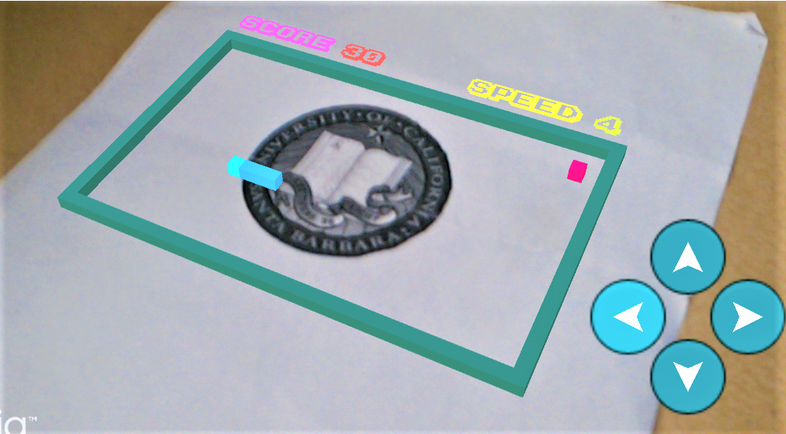
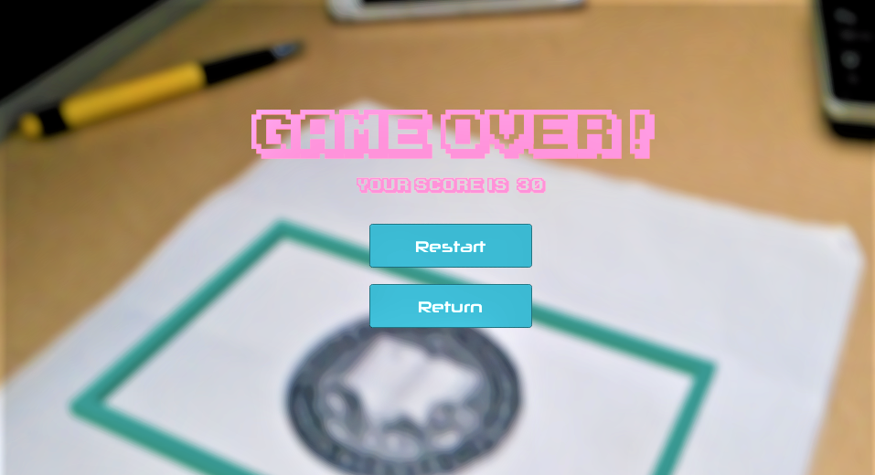

AR Snake
使用方法：
- 首先保存打印以下地址的图片作为追踪对象:
https://dbndbn6279.github.io/projects/ARSnake/imgs/UCSBLOGO.png
- 进入游戏后，可以看到背景为相机图像，尝试用相机捕捉UCSB的LOGO。
- 当检测到LOGO后，开始游戏按钮会出现，即可开始游戏。
- 若游戏过程中 LOGO丢失，则游戏复位至开始菜单。
Usage:
- Download and print the target from the following page:
https://dbndbn6279.github.io/projects/ARSnake/imgs/UCSBLOGO.png
- After entering the game, try to use the phone camera to detect the Logo in a CERTAIN DISTANCE.
- When the Target is detected, the start game button will appear and you can proceed.
- If the target is lost during the game, the game will reset and return to start menu.


